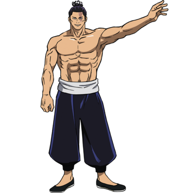

Tentang Jujutsu Kaisen
‘Jujutsu Kaisen’ adalah manga karya Gege Akutami yang terbit pada tahun 2018 di majalah Weekly Shonen
Jump terbitan Shueisa dan telah diterbitkan menjadi enam belas volume per Juni 2021.
Pada 2020, manga ini diadaptasi menjadi anime. Anime-nya sendiri diproduksi oleh MAPPA Studio dan sudah
tayang sejak 2 Oktober 2020 lalu sejumlah 24 episode untuk season pertamanya. Bulan Juni Ini, animenya
tayang secara resmi di layanan streaming berbayar Netflix.
Plot
Yūji Itadori adalah seorang siswa SMA dengan atletisitas yang tidak wajar yang tinggal di Sendai bersama kakeknya. Ia sering menghindari Klub Lari karena keengganannya pada bidang atletik, meskipun dia memiliki bakat bawaan untuk olahraga tersebut. Sebaliknya, dia memilih untuk bergabung dengan Klub Penelitian Ilmu Gaib, agar dirinya dapat bersantai dan bergaul dengan para seniornya. Setiap hari, Yūji meninggalkan sekolah pada pukul 17.00 untuk mengunjungi kakeknya di rumah sakit. Ketika dia mengunjunginya, kakeknya memberikan dua pesan kuat kepada Yūji, yaitu "selalu membantu orang" dan "mati dikelilingi orang".
Sinopsis
Setelah kematian kakeknya, Yūji menafsirkan pesan-pesan tersebut sebagai satu pernyataan bahwa setiap orang berhak mendapatkan "kematian yang layak". Ia kemudian berpapasan dengan Megumi Fushiguro, seorang penyihir yang bertanya kepadanya tentang jimat kutukan tingkat tinggi di sekolahnya yang baru-baru ini ditemukan Yūji. Senior-seniornya di Klub Penelitian Ilmu Gaib membuka segel dari jimat tersebut dan menemukan jari yang telah membusuk, yang menarik roh Kutukan makhluk mirip monster yang muncul melalui emosi negatif dan diperkuat dengan mengonsumsi kekuatan sihir yang ada pada penyihir atau jimat semacam itu. Yūji yang tidak mampu mengalahkan roh Kutukan itu karena tidak memiliki kekuatan sihir, menelan jari tersebut untuk melindungi Megumi dan teman-temannya dan menjadi wadah dari Sukuna, roh Kutukan yang kuat.
Karakter
Yuji Itadori

Satoru Gojou
Toji Fushiguro
Aoi Todo
Mahito
Mei Mei

Toge Inumaki
Suguru Geto